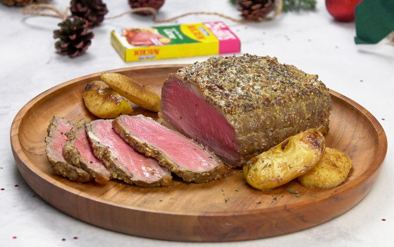

Return to main page

Indulge in the tender, flavorful perfection of this classic roast beef recipe. Slow-roasted to lock in its natural juices, this dish is seasoned simply to let the quality of the meat shine. A crisp, herbaceous crust enhances the melt-in-your-mouth tenderness of the interior, creating the ultimate centerpiece for your next special occasion or Sunday dinner. Paired with velvety gravy, roasted vegetables, or creamy mashed potatoes, this roast beef is as versatile as it is delicious. Whether you are cooking for family or hosting a feast, this recipe is a guaranteed crowd-pleaser.
Ingredients
- 3-4 pound beef roast (sirloin, rump, or top round)
- 2 tablespoons olive oil
- 2 teaspoons kosher salt
- 1 teaspoon freshly ground black pepper
- 1 teaspoon garlic powder
- 1 teaspoon onion powder
- 1 teaspoon dried thyme
- 1 teaspoon dried rosemary (crushed)
- 1/2 cup beef broth or red wine (optional, for basting)
Instructions
- Prepare the Roast:
- Remove the roast from the refrigerator and let it come to room temperature for about 30-60 minutes.
- Preheat your oven to 450°F (230°C).
- Season the Roast:
- Pat the roast dry with paper towels.
- In a small bowl, mix the salt, pepper, garlic powder, onion powder, thyme, and rosemary.
- Rub the roast all over with olive oil, then coat it evenly with the seasoning mixture, pressing gently to adhere.
- Sear the Roast:
- Heat a large oven-safe skillet or roasting pan over medium-high heat. Sear the roast on all sides for 2-3 minutes per side until browned. This locks in the juices and adds a flavorful crust.
- Roast the Beef:
- Place the seared roast on a wire rack in a roasting pan (or directly in the pan if you don’t have a rack).
- Insert a meat thermometer into the thickest part of the roast. Roast in the oven at 450°F for 15 minutes.
- Reduce the oven temperature to 325°F (160°C) and continue roasting until the internal temperature reaches:
- Rare: 125°F (52°C)
- Medium-rare: 135°F (57°C)
- Medium: 145°F (63°C)
- This typically takes 15-20 minutes per pound, but use the thermometer for accuracy.
- Rest the Roast:
- Remove the roast from the oven and transfer it to a cutting board. Tent it loosely with aluminum foil and let it rest for 15-20 minutes. This allows the juices to redistribute, keeping the meat tender and moist.
- Make a Simple Gravy (Optional):
- While the roast rests, place the roasting pan with drippings on the stovetop over medium heat.
- Deglaze the pan with beef broth or red wine, scraping up any browned bits.
- Simmer and reduce slightly, then season to taste. Strain if desired.
- Slice and Serve:
- Slice the roast against the grain into thin slices. Serve with your favorite sides, like roasted vegetables, mashed potatoes, or Yorkshire puddings, and drizzle with gravy for extra flavor.
Enjoy!
This roast beef is perfect for any occasion and makes fantastic leftovers for sandwiches or salads!
Return to top
Return to main page